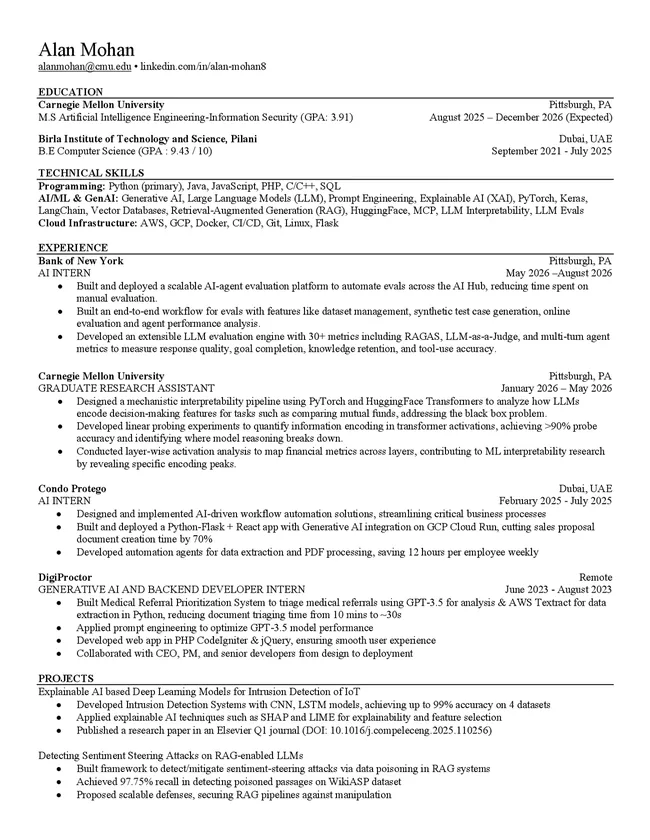
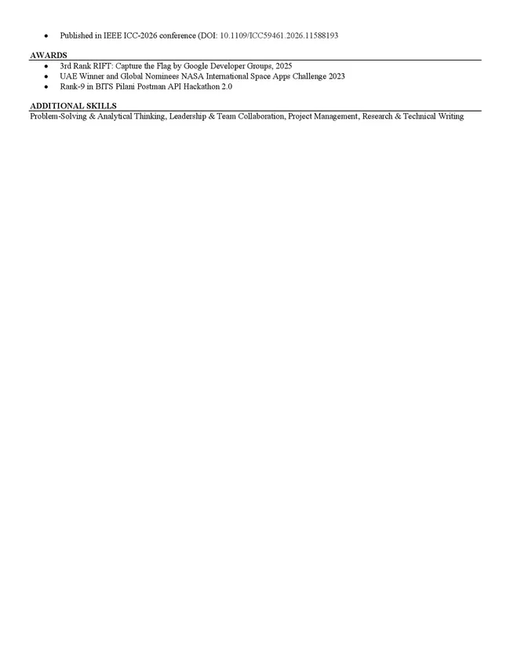

Résumé
Two pages: education, technical skills, experience, projects and awards.
Download PDF (139 KB) Open in a new tab


Two pages: education, technical skills, experience, projects and awards.
Download PDF (139 KB) Open in a new tab

